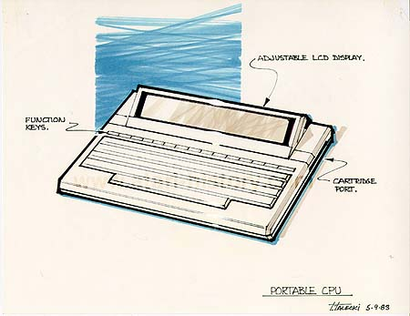

This concept looks quite familiar to one of the earliest laptop computers
introduced by Epson with was a CP/M base computer. The above
unit is slim, with adjustable LCD display to tilt for better viewing under
different lighting conditions. A row of convenient function
keys and also a slim credit-card sized cartridge port for loading programs
such as wordprocessors and spreadsheets which could have easily been carried
in the case with the laptop.